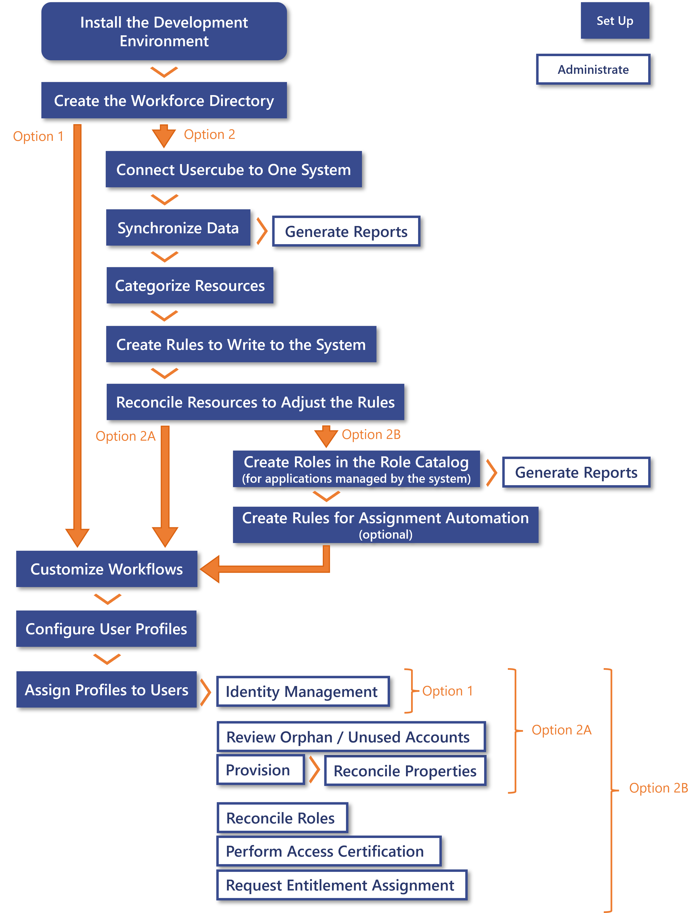

How to Start
How to start integrating Identity Manager with your own needs.
Overview
When starting with Identity Manager, several process paths can be taken according to your strategy. There is no option fundamentally better than the others, your decision must depend on your needs.
The option 1 leads quickly to identity management, i.e. users' on-boarding/movement/off-boarding without needing a periodic synchronization. See the Update Identity Data topic for additional information.
The option 2A takes more time as it requires the installation of an agent on your network in order to connect Identity Manager to the system and use the AD's data, but it leads to more gain as you can also Review Orphaned and Unused Accounts, Provision the AD, Reconcile a Property properties, and Generate Reports , for example the list of profiles assigned to users.
The option 2B takes even more time as it goes through the creation of the role model based on the system's entitlements, but it leads to even more gain as you can also Reconcile a Role , Perform Access Certification and Request Entitlement Assignment , and also Generate Reports , for example the list of assigned single roles.
The options 2A and 2B are more complicated and time-consuming than the option 1, but lead to more gain. Be aware that you can go through the process options simultaneously.
Netwrix Identity Manager (formerly Usercube) recommends the option 1 to be able to start IGA without waiting for the installation of an agent in your network, and go through the option 2 simultaneously.

Process Details
Common starting steps
- Install the Development Environment .
- Create the Workforce Repository : configure the generation of unique properties; load workforce identities to Identity Manager; adjust the data model.
After these first steps, two process options are available according to your needs: either aim directly to identity management and the opening of Identity Manager to end-users, or first connect Identity Manager to an external system in order to enable more administration activities. Both options can be started simultaneously.
Option 1: Based on the workforce directory
Starting with the workforce directory does not require the installation of a local agent.
Go directly to the common final steps (step 10).
Option 2: Based on an external system
Starting with an external system requires the installation of a local agent.
-
Connect Identity Manager to the system by creating a connector. See the Connect to a Managed System topic for additional information.
-
Synchronize Data the system's data into Identity Manager.
Based on this, you can Generate Reports , for example the list of resources in the system. A few predefined reports are available from the start, you can generate any report from this list as soon as it makes sense according to the integration progress.
-
Categorize Resources in order to classify them according to their intent, and correlate these resources with their owners.
-
Create a Provisioning Rule to write to the system in order to update the resources' properties directly in the system.
-
Adjust the rules by reconciling resources, i.e. analyze the differences spotted between the reality of resources' properties and those computed by the previously established rules. Especially, verify that accounts are correlated to the right owners and that their properties have the right values. See the Reconcile a Property topic for additional information.
Either the integrator handles the customization of the rules and the review of non-conforming resources, or they can assign an application administrator profile to a given user to perform it. Assigning this profile requires profile configuration, see steps 11 and 12.
After connecting Identity Manager to an external system, two process options are available according to your needs: either aim directly to identity management and the opening of Identity Manager to end-users, or first build the role model in order to enable more administration activities. Both options can be started simultaneously.
Option 2A: Straight to identity management
Go directly to the common final steps (step 10).
Option 2B: First build the role model
-
Create Roles in the Role Catalog for applications managed by the system.
-
Automate Role Assignments if needed: use Role Mining to create single role rules in bulk; adjust the generated rules individually and manually.
Common final steps
- Adjust HR workflows to keep the workforce directory updated (only in XML configuration).
- Define the permissions for your user profiles. See the Configure a User Profile topic for additional information.
- Define the authentication mode by configuring
SelectUserByIdentityQueryHandlerSetting(only in XML configuration), and Assign Users a Profile to open the application to end-users.